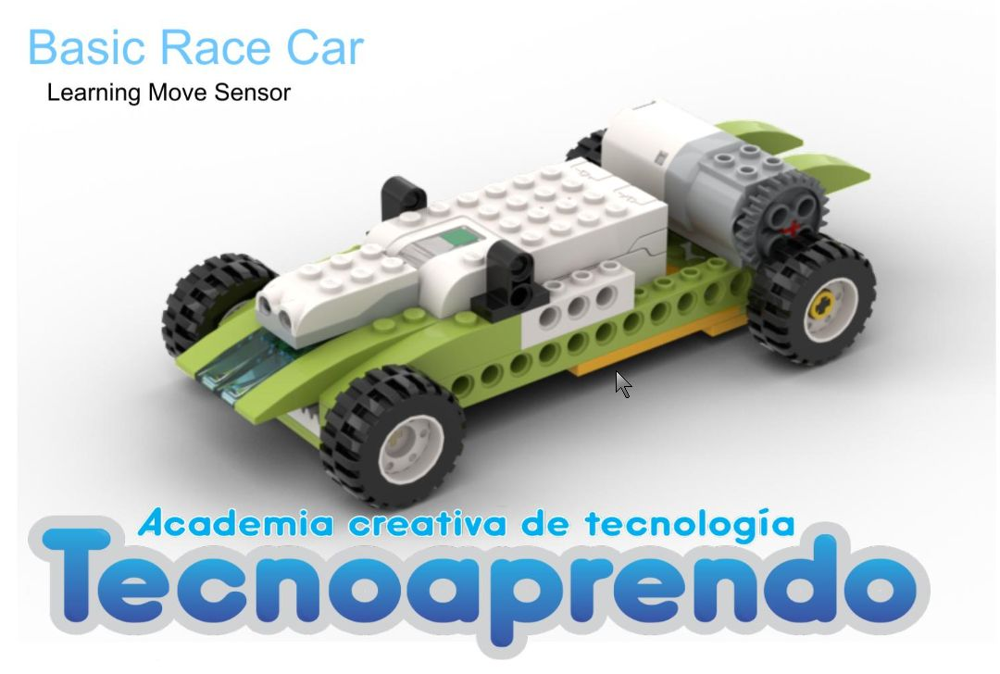
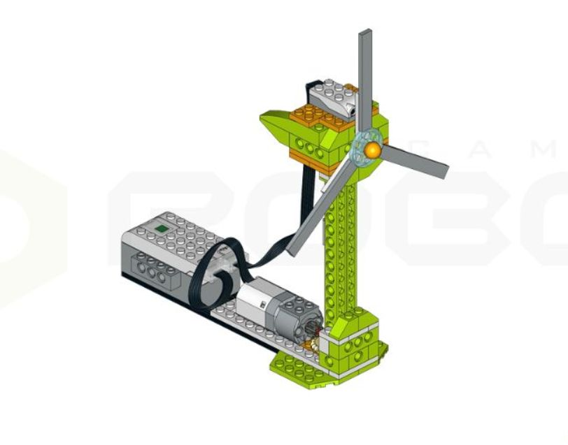

WeDo 2.0: Стартовые проекты для новичков
Базовые примеры для освоения робототехники с LEGO Education WeDo 2.0
Простые модели
Пример 1: Гоночный автомобиль

Особенности: Модель с мотором и датчиком движения, реагирует на препятствия
Пример 2: Вентилятор

Особенности: Использование редукции для изменения скорости вращения
Программирование
Базовые блоки:
Запуск/остановка мотора
Циклы повторения
Реакция на датчик наклона
Где найти материалы
Официальный сайт LEGO Education → раздел "WeDo 2.0 Curriculum"
YouTube: каналы с тегами #WeDo2 и #LegoEducation
Сообщество Scratch: проекты с интеграцией WeDo